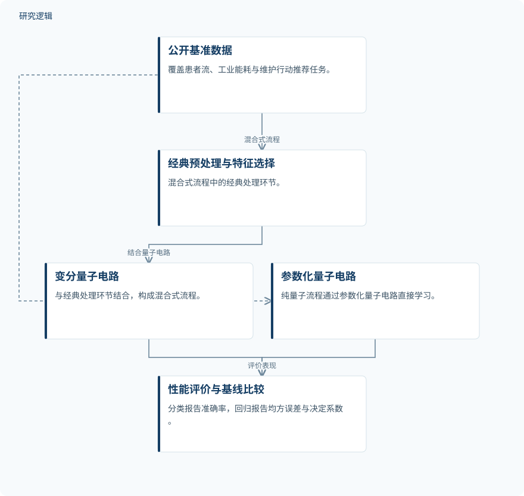

摘要解读
面向患者流量、能源需求估计与预测性维护的量子机器学习模型评估
Evaluating Quantum Machine Learning Models for Patient Flow, Energy Demand Estimation, and Predictive Maintenance
解读更新 2026-11-01 21:31 · 依据公开摘要整理，未核验全文细节
量子机器学习能否在实际运营任务中胜过经典模型？这项研究比较患者流预测、工业能耗估计与维护行动推荐，结果提示：优势取决于任务与模型配置，不能把采用量子方法直接等同于性能提升。
文章目录
从患者流到设备维护，检验量子学习的实际收益
量子机器学习（QML）结合量子计算原理与数据驱动学习。本研究关注的不是其概念潜力，而是混合式与纯量子模型在不同运营任务中，相对经典基线能否带来可测量的收益。患者流分析、工业能耗估计和设备维护行动推荐，构成了此次比较的应用范围。
两条学习流程，分别对照经典模型
研究主要使用 PennyLane，构建两条流程：混合式流程将经典预处理、特征选择与变分量子电路结合；纯量子流程则直接通过参数化量子电路学习。实验使用公开基准数据集，分类任务报告准确率，回归任务报告均方误差（MSE）与 R²。摘要未展开具体电路和训练配置。
依据摘要整理的两条量子学习流程


概括公开基准数据、混合式与纯量子流程及性能评价的关系，不表示论文原图或完整实验配置。
下载 SVG图示关系说明
实线表示相邻阶段的信息流，虚线表示跨阶段联系或反馈。
公开基准数据 → 经典预处理与特征选择：混合式流程；经典预处理与特征选择 → 变分量子电路：结合量子电路；公开基准数据 → 参数化量子电路：纯量子流程；变分量子电路 → 性能评价与基线比较：评价表现；参数化量子电路 → 性能评价与基线比较：评价表现
患者流持平、能耗微升，维护推荐出现分化
患者流预测中，混合模型与经典 KNN 基线持平，准确率为87%；同一资源受限设置下，纯量子模型的准确率为53%。这说明在该任务与配置中，混合流程保持了基线水平，但未表现出超越基线的准确率优势。
能耗估计中，量子电路学习模型略优于随机森林：测试 MSE 分别为0.73与0.74，测试 R² 分别为0.25与0.23。摘要将其描述为小幅改善，不宜据此推断广泛的量子优势。
维护行动推荐中，纯量子分类器略优于朴素贝叶斯，但摘要未给出双方的具体准确率；混合模型则明显退化，准确率为38.55%。结合其他任务可见，混合式与纯量子路线并不存在一致的优劣顺序。
资源约束明确，比较与验证细节仍待查阅
摘要指出，电路设计、训练稳定性与有限计算资源构成实际约束。但仅凭摘要，无法判断各数据集的样本规模、训练测试划分、重复试验及统计不确定性，也无法核对各基线的调参与资源预算是否可比。这些是当前资料未报告的信息，不代表论文没有开展相关工作。
当前摘要也不足以判断结果能否推广到其他设备、工业场景或真实部署环境。尤其应区分维护行动推荐的分类表现与实际可靠性收益：摘要没有提供足够证据，将前者解释为已经验证的故障减少或运维改善。
阅读启发：关注维护任务中的路线差异
阅读启发：对智能运维读者，更值得追问的是，为何混合流程在患者流任务中持平，却在维护推荐中明显退化。进一步阅读时，可关注特征处理、电路设计与训练稳定性的具体说明，以及经典基线的比较条件；这些信息有助于理解结果边界，而不是预设量子方法必然更优。
以上为本站阅读启发与建议，不是论文已验证的结论。